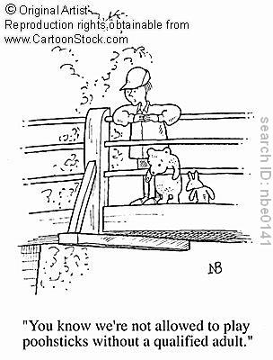
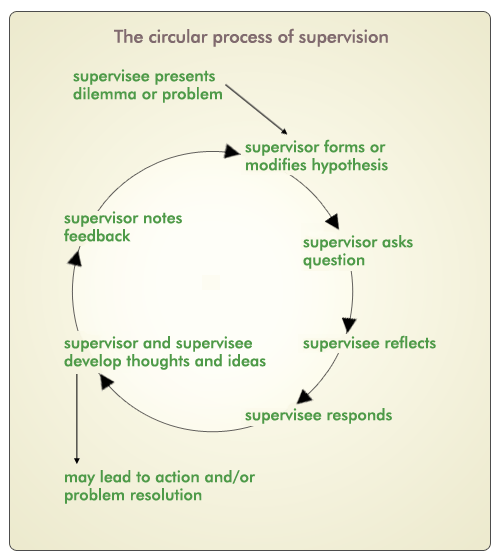

Supervision
This has been one of the key aspects of growth for me this year. I would recommend anyone doing this line of work to get a good supervisor and meet with them regularily. This not only enables you to grow as a person it also helps keep you and your clients safe. I am of course talking about clinical supervision and not the kind of supervision that comes from a manager within the workplace. I obtained individual external supervision, this meant that I met with my supervisor one-on-one and my supervisor had no connection to my workplace. This provided an objective viewpoint about issues because the supervisor had no invested interests other than seeing that I became the best leader I could be.
There have been many occasions when I have had a question about how to approach issues and my supervisor, although not knowing the situation or the people involved, has helped me in the decision-making process. The supervision has also been helpful in debriefing situations, pointing out when I have done things well and celebrating those times, but also helping to work out what has happened when things haven't gone well. This is sometimes a painful process and has required that I learn a healthy dose of humility in the process of acknowledging when I have stuffed up, owning it and apologising and learning from it.
Acountability is probably the most helpful aspect of supervision. It is regular, which means you meet with the same person frequently. Those issues and action plans from previous sessions are followed up on and you have to be able to say whether you have made any changes in the situation or not. The process can be explained best by the action reflection cycle shown.